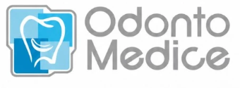
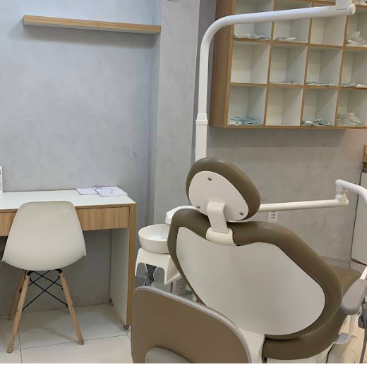

01
01Implantes
Uma possibilidade para repor dentes perdidos e reabilitar o sorriso.
Conversar sobre implantes →
AgendarSeu sorriso merece o melhor cuidado.
Cuidado odontológico perto de você, com conversa clara desde o primeiro contato até a avaliação.

Os tratamentos abaixo são exemplos ilustrativos para esta prévia. Confirme a disponibilidade com a clínica; a indicação depende de avaliação profissional.
01Uma possibilidade para repor dentes perdidos e reabilitar o sorriso.
Conversar sobre implantes → 02
02Acompanhamento para alinhamento dos dentes e cuidado com a mordida.
Conversar sobre aparelho → 03
03Opções estéticas para cor, formato e harmonia do sorriso, conforme avaliação.
Conversar sobre estética → 04
04Alternativas para repor dentes e recuperar conforto e função no dia a dia.
Conversar sobre próteses →A consulta começa entendendo o que trouxe você até aqui. Depois da avaliação, a equipe explica os caminhos possíveis para o seu sorriso.
Da atendente ao Dr., excelente atendimento! Serviço de primeira. Sem falar nos preços, que são bem acessíveis.
Conte o que você procura e tire suas primeiras dúvidas.
A equipe informa a disponibilidade de atendimento.
Receba orientação profissional para os próximos passos.
Consulte a disponibilidade de atendimento diretamente pelo Instagram.
Informações diretas para facilitar seu primeiro contato.
Toque em qualquer botão de Instagram do site e envie a mensagem. A equipe informa os horários disponíveis.
Os tratamentos apresentados são exemplos ilustrativos. Confirme a disponibilidade com a clínica; a indicação depende de avaliação profissional.
Confira a localização da Odonto Medice no Google Maps pelo botão disponível nesta página.
Os valores dependem da avaliação e do tratamento indicado. Fale com a equipe pelo Instagram para receber as orientações.
Chame a Odonto Medice e consulte os horários disponíveis para avaliação.
Falar pelo Instagram